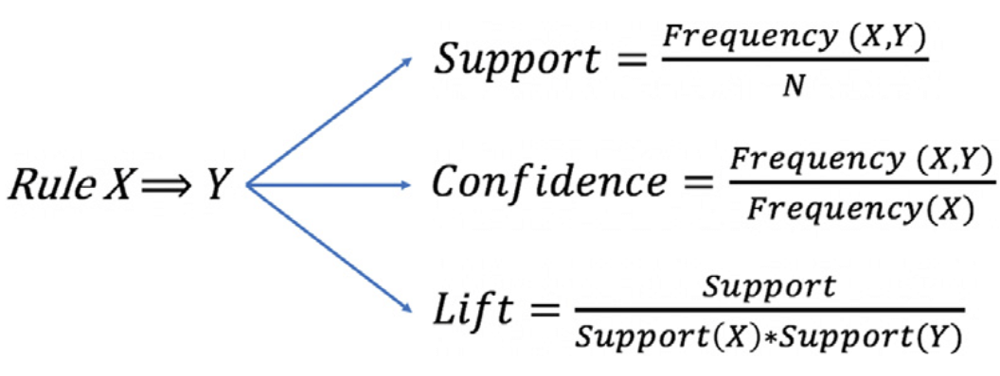
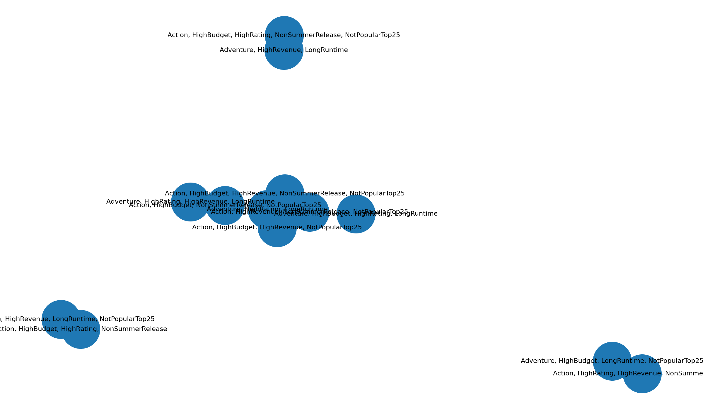

Association Rule MiningAprioriSupport • Confidence • Lift
ARM (Association Rule Mining)
This section uses Association Rule Mining (ARM) to discover common co-occurrence patterns among movie
attributes (genres + binned success indicators). The goal is to find interpretable “if-then” rules that
explain which combinations of attributes tend to appear together in the dataset.
Overview
Association Rule Mining finds frequent co-occurring items in a dataset and expresses them as rules of
the form A → B. In this project, an “item” is a categorical movie attribute such as a genre
(e.g., Action, Adventure) or a binned indicator (e.g., HighRevenue, HighRating). A rule A → B means that
when movies contain itemset A, they often also contain itemset B. ARM is useful because the output is
directly interpretable and can highlight combinations of factors that commonly appear together in the
data.
Three core metrics summarize rule usefulness: support (how often A and B appear together),
confidence (how often B appears when A appears), and lift (how much more likely B is given
A compared to baseline B). Lift greater than 1 indicates a positive association beyond chance.
To find rules efficiently, the Apriori algorithm first discovers frequent itemsets and then
generates rules from those itemsets. Apriori works by using the “downward closure” property: if an
itemset is infrequent, any larger itemset that contains it must also be infrequent, which allows
pruning large portions of the search.

Figure 1 — Support, Confidence, Lift. These three metrics summarize how common a rule is,
how reliable it is, and whether the association is stronger than chance.

Figure 2 — Network view of top lift rules. Nodes represent itemsets and edges represent
strong associations. This helps visually identify clusters of co-occurring attributes.
Data Prep
ARM requires unlabeled transaction data. Instead of numeric features, the input must be a set of
transactions where each row is a “basket” of items. For this project, each transaction represents one
movie and contains: (1) its genre tags, and (2) binned indicators such as HighRevenue / HighRating /
HighBudget / LongRuntime and release timing categories. This format is required because Apriori is
designed to count item co-occurrences.
The one-hot matrix is an intermediate step where each unique item becomes a column and each row (movie)
becomes a binary vector. Apriori runs on this one-hot representation to compute frequent itemsets and
generate rules.
Code
The ARM pipeline was implemented in Python using a frequent-itemset mining implementation (Apriori) and
rule generation. Code is linked below for repeatability.
The lists below show the top 15 rules by each metric. Support highlights common patterns, confidence
highlights reliability, and lift highlights associations that are stronger than chance.
ARM produces interpretable “bundles” of features that tend to appear together (for example, certain
genre
combinations alongside binned success indicators such as HighRevenue or HighRating). These patterns help
support the project’s core question—what makes a movie “successful”—by identifying recurring
combinations
that align with different notions of success (popularity vs ratings). In later modules, these insights
can inform feature engineering, cluster interpretation, and the choice of predictors for supervised
models.